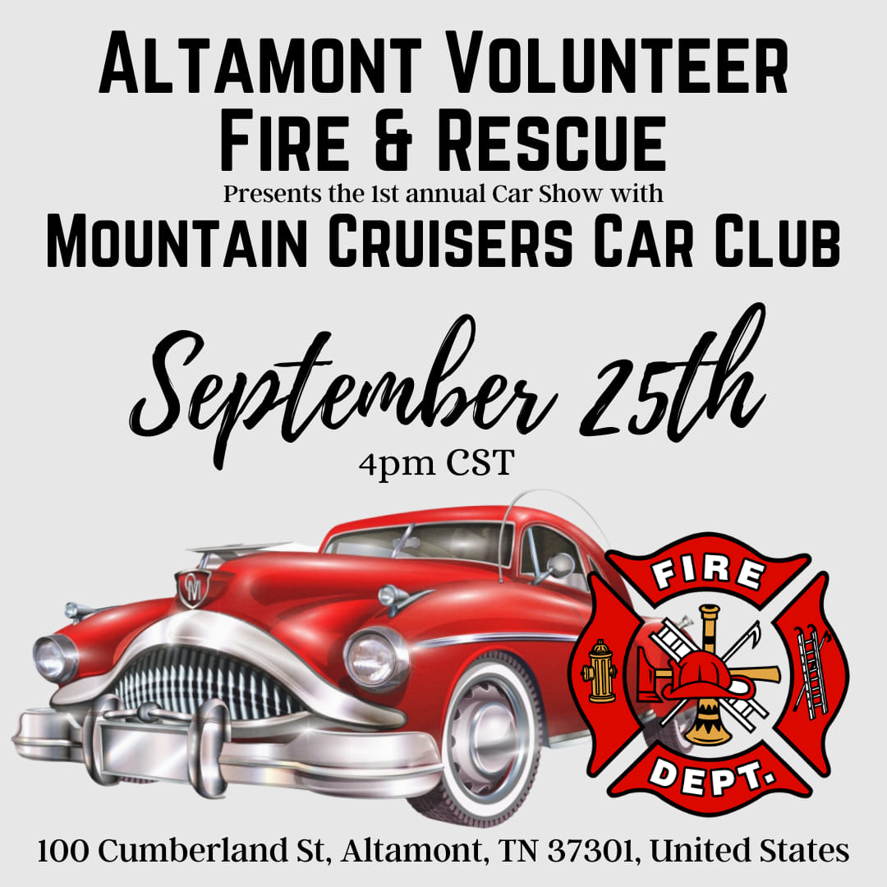

Harley Cross Resume 2022
Education
Highschool:
Grundy County HighschoolGraduated May of 2021 with Diploma of Distinction
Focus: Engineering Design

College:
Chattanooga state Community CollegeDegree: Digital Media Production
Concentration in Web Design
Job Experience
Altamont Coffee & Cafe
Position: Waitress and BaristaDec 2019 - shut down Dec 2020
- Talked and socialized with customers in a way that enhanced their experience.
- Good under pressure
- served groups of 13 plus people alone
- Hosted fundraiser classic car shows at Cafe that boosted the business and raised money for organizations and people in the county.
Forever Young Salon
Freelance Makeup ArtistMay 2019 - Present
- Organized and planned appointment times
- Kept up in high pace stressful situations
Volunteer
Mountain Cruisers Car Club
Position: Event and Social Media Manager
We raise money to help organizations in our county. We also raise money to make Thanksgiving Baskets that we hand out to widows in our county so that they are able to have a proper Thanksgiving with their families when they other wise would not have been able to.
2019- Present

Altamont Volunteer Fire & Rescue
Fundraiser Manager and truck engineer in training. We are a volunteer fire department but we also have a rescue team and are trained in extrication.
I have taken the Vanessa K. class and am certified with the state to be able to drive a fire engine.